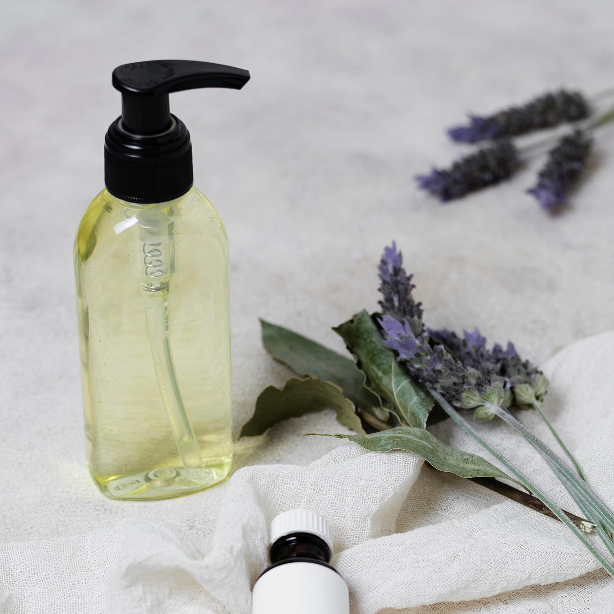
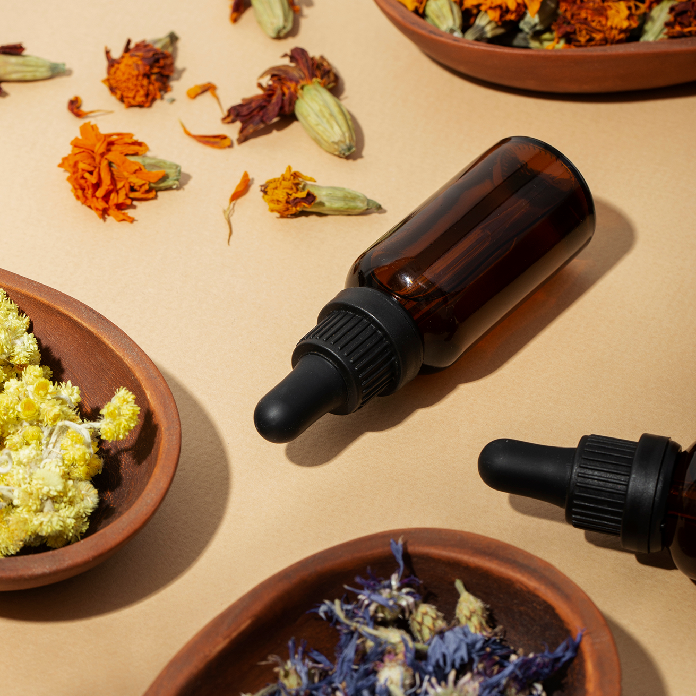

Искусство исцеления через запахи
Массаж и ароматерапия — это два мощных инструмента, которые, соединяясь, создают эффект синергии. Если массаж работает с физическим телом, то ароматерапия обращается напрямую к нервной системе, превращая обычную процедуру в глубокий терапевтический сеанс.
Массаж — это не только про тело, но и про состояние души. Мы дополняем наши процедуры селективными эфирными маслами. Ароматерапия помогает настроиться на нужную волну еще до начала прикосновений.
Запахи напрямую связаны с лимбической системой мозга, которая отвечает за эмоции и память. Правильно подобранный аромат может мгновенно переключить ваш мозг из режима «стресс/работа» в режим «отдых/восстановление».


Как это работает на уровне физиологии
Секрет эффективности ароматерапии кроется в строении нашего мозга. В отличие от других чувств, обоняние имеет прямой доступ к лимбической системе — древнейшей части мозга, которая отвечает за эмоции, память и инстинкты.
Когда молекулы эфирного масла попадают на кожу или вдыхаются, происходит следующее
1. Обонятельный путь. Аромат мгновенно передает сигнал в гипоталамус, регулируя выработку гормонов (например, снижая уровень кортизола — гормона стресса).
2. Трансдермальный путь. Мельчайшие молекулы эфирных масел проникают сквозь поры кожи в кровоток, оказывая системное воздействие на весь организм.
Основные направления аромамассажа
В зависимости от цели клиента, мастер подбирает определенный профиль ароматов.
1. Релаксация и борьба со стрессом
Используются масла с седативным действием. Они помогают при бессоннице, тревожности и эмоциональном выгорании.
Лаванда — золотой стандарт для успокоения нервной системы.
Иланг-иланг — снижает частоту сердечных сокращений и уровень давления.
Бергамот — мягко снимает напряжение, не вызывая сонливости.
2. Энергия и тонус
Подходит для утренних сеансов или при хронической усталости. Стимулирует микроциркуляцию и бодрит.
Лимон и Грейпфрут — пробуждают чувства и улучшают настроение.
Розмарин — повышает концентрацию внимания и ментальную ясность.
Мята перечная — дает ощущение свежести и физического прилива сил.
3. Терапевтический и спортивный эффект
Эвкалипт — облегчает дыхание и обладает противовоспалительным эффектом.
Можжевельник — способствует детоксикации и лимфодренажу.
Ладан — помогает глубоко дышать и снимает зажимы в теле.

Преимущества профессионального подхода
В отличие от использования бытовых ароматизаторов, профессиональный аромамассаж гарантирует безопасность и результат благодаря трем факторам
Чистота состава
Профессиональные мастера используют только 100% натуральные эфирные масла. Синтетические отдушки могут вызвать головную боль или аллергию, тогда как натуральные масла несут терапевтическую ценность.
Правильное разведение
Эфирные масла — это мощные концентраты, которые нельзя наносить на кожу в чистом виде. Они всегда смешиваются с качественными базовыми маслами (миндальным, жожоба или виноградной косточки), что обеспечивает безопасную и глубокую доставку активных веществ.
3. Индивидуальная подстройка
Мастер учитывает психоэмоциональное состояние клиента. Если человек чувствует упадок сил, аромат будет бодрящим; если клиент перегружен работой — расслабляющим.
Меры предосторожности
Несмотря на природную пользу, ароматерапия имеет свои нюансы
Аллерготест. Перед началом курса рекомендуется проверить реакцию на масло на небольшом участке кожи.
Противопоказания. Беременность, эпилепсия и некоторые хронические заболевания требуют консультации с врачом перед использованием определенных масел.
Ароматерапия превращает массаж из механического воздействия в комплексную заботу о ментальном и физическом здоровье. Это инвестиция в ваше спокойствие, энергию и внутренний баланс.